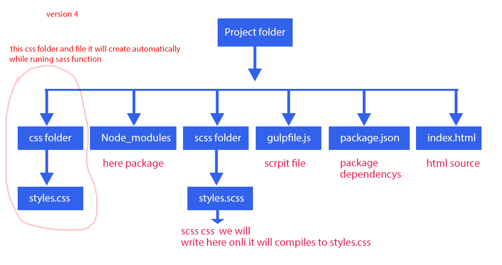
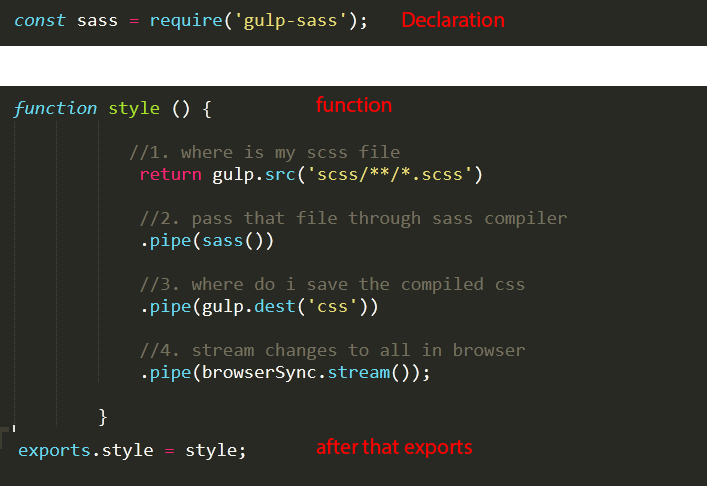
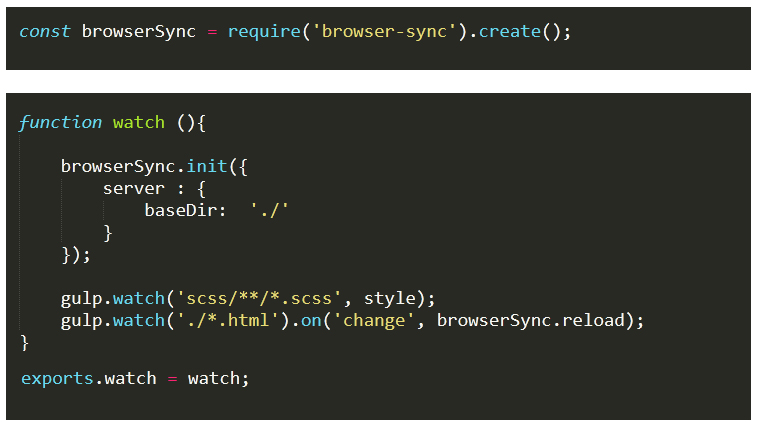
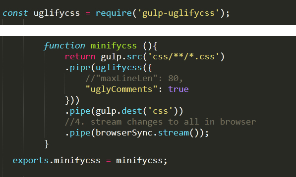
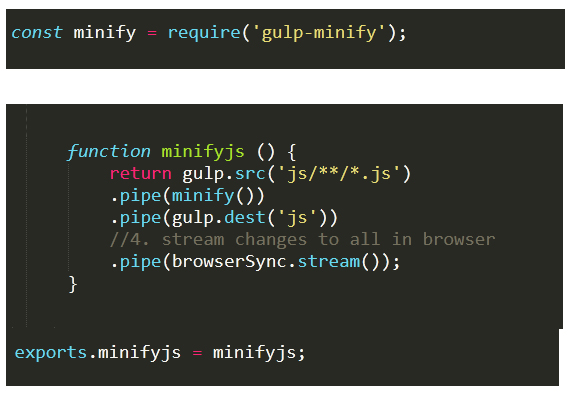
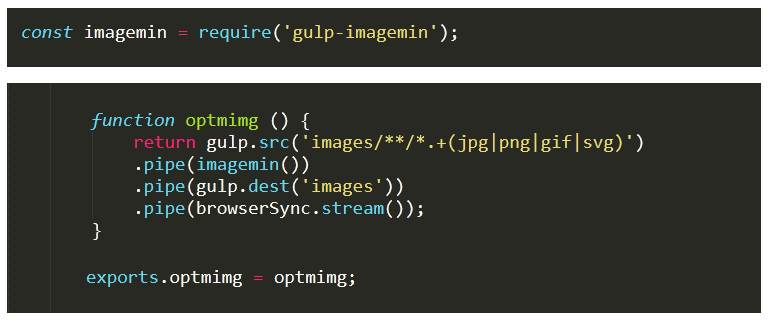

© Copyrights Rajesh. All rights reserved.
is a tool that helps you out with several tasks when it comes to web development.
Sass Folder Structure
we need to create manually
scssfolder (while runing sass through command line it will create automatically css folder and css file based on scss file )
gulpfile.js
index.html

Spins up a web server
Compiles Sass to CSS
Refreshes the browser automatically whenever you save a file
Optimizes all assets (CSS, JS, fonts, and images) for production
in node.js we need to install gulp for that command
1) npm install gulp -g (this is globally install )
next we need to create package,json file through command line...
2) npm init
next we can install Gulp into the our project
3)npm install gulp --save-dev
then now it will install node_module in our paject
The first step in gulpfile.js we need to declered below
4) const gulp = require('gulp');
The require statement tells Node to look into the node_modules folder for a package named gulp. Once the package is found, we assign its contents to the variable gulp.
next we can install gulp-sass for compile Sass to CSS
5)npm install gulp-sass --save-dev
and after install we can decler function in gulpfile.js

after that if you write code in our styles.scss file (useing this command "gulp style (because our function name in img style)" we can run. here style is function name you check it above img ) it will compile to style.css
we can tell Gulp to automatically run the sass file and browsersync. whenever a file is saved through a process called "watching".
for that we need install and declere to gulpfile.js below code
6) npm install browser-sync --save-dev

next if you run command line "gulp watch" whenever save file it will automaticall save and complie and as well as Browser Sync also it will happen.
7) npm install --save gulp-uglifycss
for minifycss file we can install
after installing we can immport code to gulpfile.js below

after that we can run gulp minifycss then it will minifycss
8) npm install --save-dev gulp-minify
for minifyjs file we can install
after installing we can immport code to gulpfile.js below

after that we can run gulp minifyjs then it will minifycss
8) npm install gulp-imagemin --save-dev
for Optimizing Images we can install
after installing we can import code to gulpfile.js below

after that we can run gulp optmimg then it will Optimizing Images
© Copyrights Rajesh. All rights reserved.